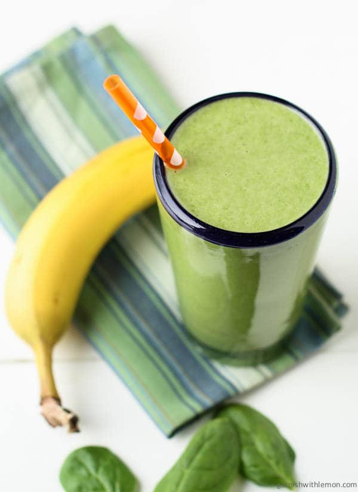

Spinach and Banana Smoothie
Ingredients
- ½ cucumber
- 3 sticks celery
- 1 handful of parsley
- 1 banana
- 1 cup spinach
- 5-6 leaves fresh mint
- ½ lemon
- ½ cup water
- 3-5 cubes ice
This smoothie is low in fat and sugar, high in fiber, vegetarian and vegan-friendly.
No excuses for skipping breakfast! This tasty, filling spinach and banana smoothie takes only 5 minutes to prepare and will keep you full until lunch. The spinach is packed with healthy nutrients: low in fat and even lower in cholesterol, it is high in niacin and zinc, as well as protein, fiber, vitamins. It will give you everything you need for a healthy start of the day. It's a real (no guilt) pleasure!

Instructions
Add all ingredients in a blender and blend for about one minute. Add additional water as needed to reach desired consistency. Serve and enjoy!

Preperation time: 5 minutes
Number of servings: 1
Watch how it's made
Recipe adapted from ©Tasteful Adventure.